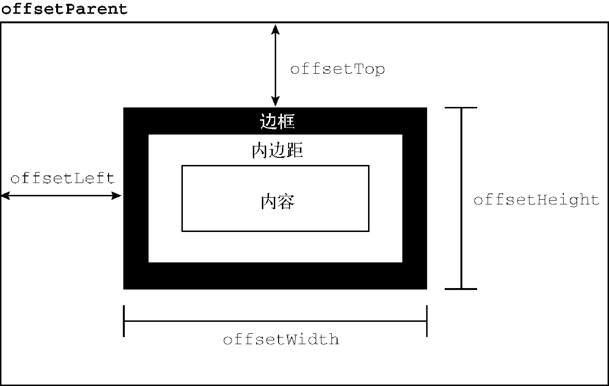
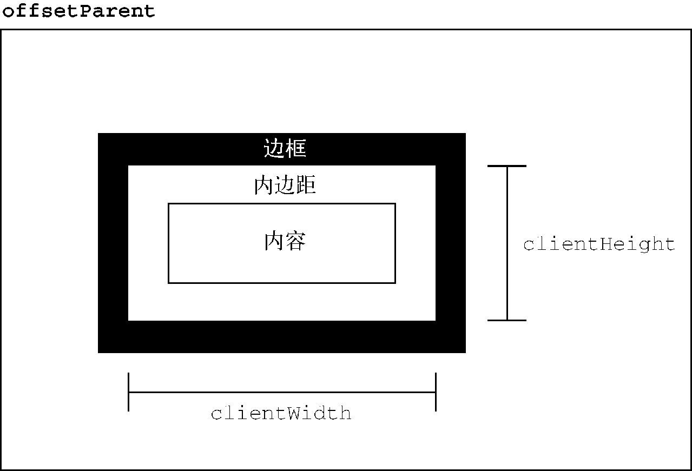
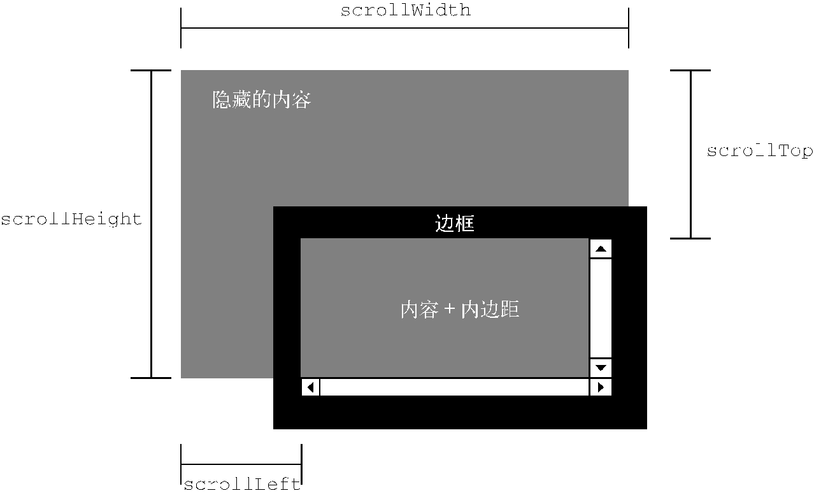
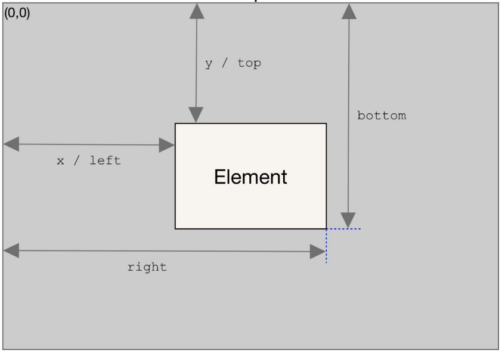
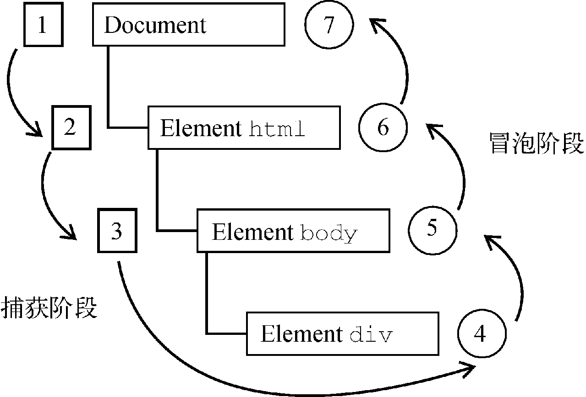

《JavaScript 高级程序设计（第四版）》读书笔记（第 12-17 章）
书接上回，本文为第 12-17 章的笔记。
第 12 章 - BOM
- Page 873
window对象：
- top / self / parent：分别指向“最上层”、“自身”以及“父层”窗口；
- screenLeft / screenTop：表示窗口相对屏幕左侧、顶部的位置；
- （方法）moveTo / moveBy：移动窗口（可能被禁用）；
- （方法）resizeTo / resizeBy：缩放窗口（可能被禁用）；
- （方法）scrollTo / scrollBy：滚动窗口；
// scroll document to a fixed position (1000, 0).
window.scrollTo({
left: 1000,
top: 0,
behavior: 'smooth',
});
- devicePixelRatio：表示物理像素与逻辑像素（CSS 像素）之间的缩放系数；
- outerWidth / outerHeight：返回浏览器窗口自身的大小；
- innerWidth / innerHeight：返回浏览器窗口中页面视口的大小（不包含浏览器边框和工具链）；
// get the size of the viewport.
let { innerWidth, innerHeight } = window;
if (typeof innerWidth !== 'number') {
if (document.compatMode === 'CSS1Compat') {
innerWidth = document.documentElement.clientWidth; // <html>.
innerHeight = document.documentElement.clientHeight;
} else {
innerWidth = document.body.clientWidth; // <body>.
innerHeight = document.body.clientHeight;
}
}
- pageXOffset / pageYOffset：获得文档相对于当前视口的滚动距离（X/Y）；
- （方法）open：导航到指定 URL 或打开新浏览器窗口；
- （方法）close：关闭当前窗口；
- closed：判断所引用窗口是否已关闭（常用于 window.open() 的返回窗口）；
- opener：仅存在于新创建窗口返回的 window 对象上，指向打开它的窗口。将该属性设置为 null 表示新打开的标签页不需要与打开它的标签页通信，因此可以在独立进程中运行；
- （方法）setTimeout / setInterval：函数第二个参数指定的时间为向异步队列添加新任务之前等待的时间（同步任务会优先执行）。被添加到队列中的任务会按照顺序执行；
- （方法）alert / confirm / prompt：系统对话框；
- Page 895
window.location对象：
window.location与document.location指向同一个对象；- 除 hash 属性外，只要修改 location 的一个属性，就会导致页面重新加载新的 URL。
- 属性和方法：
- hash：URL 散列值；
- host：服务器名及端口号；
- hostname：服务器名；
- href：当前页面完整 URL（同 *location.toString()*）。修改该值或 window.location，可以导航到特定的 URL；
- （方法）assign：导航到特定 URL；
- （方法）replace：导航到特定 URL（但不增加新历史记录，仅替换）；
- （方法）reload：重新加载当前页面。传递参数为 true 时会从服务器请求而不使用缓存；
- pathname：URL 中的路径/文件名；
- port：端口号；
- protocol：页面使用的协议；
- search：URL 的查询字符串（queries）；
- 可以使用 URLSearchParams 接口来方便地检查和修改查询字符串；
- username：域名前指定的用户名；
- password：域名前指定的密码；
- origin：URL 的源地址。
- Page 904
window.navigator对象：
- 用于标识浏览器（描述了浏览器状态和标识）。
- 属性和方法：
- plugins：包含浏览器所安装插件的信息；
- userAgent：获得用户代理信息；
- （方法）registerProtocolHandler：可以将某个网站注册为处理某种特定类型信息的应用程序；
- Page 914
window.screen对象：保存着客户端显示器信息。 - Page 916
window.history对象：
- 保存有当前窗口首次使用以来用户的导航历史记录。
- 属性和方法：
- （方法）go / back / forward：可以在用户历史记录中进行导航；
- length：返回当前历史记录中的条目数量；
- （方法）pushState：向当前浏览器会话的历史堆栈中添加一个状态，但不向服务器发送请求，同时触发
popstate事件（浏览器地址栏会反映出新的状态）；
let stateObj = { foo: 'bar' };
window.history.pushState(stateObj, '', 'baz.html');
- （方法）replaceState：（同上）但不会创建新历史纪录，只会覆盖当前状态；
- state：获取当前页面状态；
第 13 章 - 客户端检测
（略）
第 14 章 - DOM
- Page 970DOM：HTML 与 XML 文档的编程接口。DOM 表示由多层节点构成的文档，通过它开发者可以添加、删除和修改页面的各个部分。
- DOM Level 1：1998 年成为 W3C 推荐标准，提供了基本文档结构和查询接口；
- 在 JavaScript 中，所有节点类型都继承 Node 类型；
- HTMLElement（所有 HTML 元素均为该类型或其子类型的实例） -> ELement -> Node；
- HTMLDocument（document）-> Document -> Node；
- Text -> CharacterData -> Node；
- Comment -> CharacterData -> Node；
document对象中的获取元素方法会返回 HTMLCollection 类型，该类型仅能包含有 ELement 类型的节点；- 12 种节点类型（浏览器并不支持所有节点类型）：
- Node.ELEMENT_NODE：元素节点；
- Node.ATTRIBUTE_NODE：属性节点；
- Node.TEXT_NODE：文本节点；
- Node.CDATA_SECTION_NODE：CDATA 节点（<!CDATA[[ … ]]>）；
- Node.ENTITY_REFERENCE_NODE：（已在 DOM4 中移除）；
- Node.ENTITY_NODE：（已在 DOM4 中移除）；
- Node.PROCESSING_INSTRUCTION_NODE：处理指令节点（<?xml-stylesheet … ?>）；
- Node.COMMENT_NODE：注释节点（<!– … –>）；
- Node.DOCUMENT_NODE：文档节点（document）；
- Node.DOCUMENT_TYPE_NODE：文档类型节点（<!DOCTYPE html>）；
- Node.DOCUMENT_FRAGMENT_NODE：文档片段节点；
- Node.NOTATION_NODE：（已在 DOM4 中移除）；
- HTMLDocument 类型下只能有四种类型的子节点：
- DocumentType（最多一个）；
- Element（最多一个，通常为 <html>）;
- ProcessingInstruction；
- Comment；
- document 额外属性和方法：
- title：返回文档标题；
- URL：返回文档 URL；
- domain：返回文档所在域名（修改该值可用于跨越，如：设置 iframe 文档域名与当前文档域名为同一个二级域名，即去掉三级及以上域名的差异）；
- referrer：返回文档来源 URL；
- body：返回文档 <body> 元素；
- getElementById：通过 ID 获取文档上的元素；
- getElementsByTagName：通过元素名获取文档上的元素；
- getElementsByName：通过属性名获取文档上的元素（适用于 <input type=”radio”> 元素）；
- styleSheets：返回文档中可用的样式表（CSSStyleSheet）集合；
- anchors：包含文档中所有带 name 的 <a> 元素；
- forms：包含文档中所有的 <form> 元素；
- images：包含文档中所有的 <img> 元素；
- links：包含文档中所有带 href 的 <a> 元素；
- implementation：一个对象，提供了与浏览器 DOM 实现相关的信息和能力（已废弃，均返回 true）；
- （方法）write / writeln：向网页输出流中写入内容；
- （方法）open / close：打开/关闭网页输出流；
- （Node.DOCUMENT_TYPE_NODEdoctype：返回文档类型对象；
- name：返回文档类型名称。
- （Node.TEXT_NODE）（方法）createTextNode：创建文本节点；
- （Node.COMMENT_NODE）（方法）createComment：创建注释节点；
- （Node.DOCUMENT_FRAGMENT_NODE）（方法）createDocumentFragment：创建文档片段（可用作被实际添加文档的父节点，以避免浏览器的多次渲染）；
- （Node.ATTRIBUTE_NODE）（方法）createAttribute / setAttributeNode：创建和设置属性节点；
- DOM 节点查询属性和方法：
- （节点操作）nodeName：返回节点的名称（一般为标签名大写）；
- （节点操作）nodeValue：文本节点返回文本值；元素节点始终返回 null；
- （节点操作）nodeType：返回节点的类型常量；
- childNodes：返回类数组 NodeList，存放子元素实例；
- （方法）item：返回该集合中某位置的元素；
- parentNode：返回父元素实例；
- previousSibling：返回前一个同胞元素；
- nextSibling：返回下一个同胞元素；
- firstChild：返回该元素的第一个子元素；
- lastChild：返回该元素的最后一个子元素；
- （方法）hasChildNodes：返回当前元素是否有子元素；
- ownerDocument：返回当前元素的所在文档节点；
- DOM 节点操作属性和方法：
- （Node.ELEMENT_NODE）id：获取/设置当前元素的 ID；
- （Node.ELEMENT_NODE）className：获取/设置当前元素的类名；
- （Node.ELEMENT_NODE）title：获取/设置当前元素的标题；
- （Node.ELEMENT_NODE）（方法）getAttribute / setAttribute / removeAttribute：获取/设置/移除当前元素的 HTML 属性（属性名要保持一致，获取的属性值通常以“字符串”的形式来表示）；
- （Node.ELEMENT_NODE）attributes / getAttributeNode()：获取当前元素的属性集合（NamedNodeMap 对象，保存了 Attr 节点）；
- （方法）getNamedItem：返回某个属性节点；
- （方法）removeNamedItem：删除某个属性节点；
- （方法）setNamedItem：设置某个属性节点；
- （方法）item：获得索引位置 pos 处的节点。
- （Node.ELEMENT_NODE）（方法）createElement：创建新元素；
- （Node.TEXT_NODE）（方法）appendData：向文本节点末尾添加数据；
- （Node.TEXT_NODE）（方法）deleteData：删除文本；
- （Node.TEXT_NODE）（方法）insertData：插入文本；
- （Node.TEXT_NODE）（方法）replaceData：替换文本；
- （Node.TEXT_NODE）（方法）splitText：拆分文本（与 normalize 作用相反）；
- （Node.TEXT_NODE）（方法）substringData：提取文本子串；
- （Node.TEXT_NODE）length：返回文本节点长度；
- （方法）appendChild：为当前元素添加子元素（位于末尾）；
- （方法）insertBefore：为当前元素添加子元素（位于参考节点之前）；
- （方法）replaceChild：替换子元素；
- （方法）removeChild：移除子元素；
- （方法）cloneNode：克隆当前元素（可选是否深复制）。新复制的元素会丢失原有的事件处理器；
- （方法）normalize：检测当前节点的所有后代，删除不包含文本的文本节点，或合并互为同胞关系的文本节点；
- Page 1043MutationObserver 接口（取代了废弃的 MutationEvent）：可以用于监听 DOM 改动。
- 回调函数会接收一个
MutationRecords，记录所有变更的详细信息。记录按照变化事件发生的顺序被添加，核心为“异步回调与记录队列模型”； - MutationObserver 实例拥有对要观察目标节点的“弱引用”，而目标节点则拥有对 MutationObserver 的“强引用”。MutationRecord 可能包含有对 DOM 节点的引用，因此若保存这些实例，则可能对节点的垃圾回收产生影响。
let observer = new MutationObserver((mutationRecords, observer) => {
console.log(mutationRecords);
});
observer.observe(document.body, {
attributeOldValue: true, // 是否记录观察之前的属性值；
attributeFilter: ['class'], // 观察的属性列表；
attributes: true, // 观察属性变化；
characterData: true, // 修改字符数据是否触发变化事件；
characterDataOldValue: true, // 是否记录之前变化的字符数据；
childList: true, // 修改目标节点的子节点是否触发变化事件；
subtree: true, // 观察子树；
});
observer.disconnect();
第 15 章 - DOM 扩展
- Page 1071Selector API：
- （方法）querySelector：返回符合条件的第一个元素；
- （方法）querySelectorAll：返回一个包含所有匹配元素的 NodeList 静态实例；
- （方法）matches：返回是否存在所匹配的元素。
- Page 1075元素遍历（Element Traversal 规范）：
- childElementCount：返回子元素数量（不包含文本节点和注释）；
- firstElementChild：指向第一个 Element 类型的子元素（Element 版的 firstChild）；
- lastElementChild：指向最后一个 Element 类型的子元素（Element 版的 lastChild）；
- previousElementSibling：指向前一个 Element 类型的同胞元素（Element 版的 previousSibling）；
- nextElementSibling：指向后一个 Element 类型的同胞元素（Element 版的 nextSibling）；
- Page 1077HTML5：
- （方法）getElementsByClassName：根据类名获取元素（返回 NodeList）；
- dataset：包含当前元素上的所有自定义属性（以 “data-” 作为前缀开头）；
- innerHTML：读取/更换当前元素内部（不包含该元素）的 HTML 字符串（HTML5 下通过该属性动态插入的 <script> 标签是不会被执行的）；
- outerHTML：读取/更换当前元素及其内部的 HTML 字符串；
- （方法）insertAdjacentHTML：插入 HTML 元素；
- （方法）insertAdjacentText：插入文本（节点）；
- （方法）scrollIntoView：滚动浏览器窗口或容器窗口以便包含元素进入视口；
- classList：包含当前元素所有类型的一个集合（DOMTokenList）；
- *add(value)*：向类名列表中添加类名；
- *contains(value)*：返回给定类名是否存在；
- *remove(value)*：删除指定类名；
- *toggle(value)*：若指定类名存在，则删除；否则添加。
- （HTMLDocument）activeElement：返回当前拥有焦点的 DOM 元素（默认为 document.body）；
- （HTMLDocument）（方法）hasFocus：返回文档当前是否拥有焦点（表明用户是否在操作页面）；
- （HTMLDocument）readyState：表明当前文档的状态；
- loading：文档正在加载；
- complete：文档加载完成。
- （HTMLDocument）compatMode：返回当前文档的渲染模式（标准模式 / 怪异模式）；
- （HTMLDocument）head：指向 <head> 元素；
- （HTMLDocument）characterSet：当前页面使用的字符集（默认为 UTF-16）；
- 专有扩展（未进入标准）：
- children：返回一个 HTMLCollection，包含所有 Element 类型的子节点；
- （方法）contains：用于验证个元素是否为另一个元素的后代；
- innerText：读取/更换当前元素内部（不包含该元素）的文本（按照 DFS 的顺序将子树中的所有文本节点值拼接起来）；
- outerText：（同上，但包含当前节点）；
第 16 章 - DOM2 和 DOM3
- Page 1106DOM 子集：
- DOM Core：在 DOM1 核心部分基础上，为节点增加方法和属性；
- DOM Views：定义基于样式信息的不同视图；
- DOM Events：定义通过事件实现 DOM 文档交互；
- DOM Style：定义以编程方式访问和修改 CSS 样式的接口；
- DOM Traversal and Ranges：遍历 DOM 文档及选择文档内容的接口；
- DOM HTML：在 DOM1 部分基础上，增加属性、方法和新接口；
- DOM Mutation Observers：定义基于 DOM 变化触发回调的接口。
- Page 1107XML 命名空间：可以实现在一个格式规范的文档中混用不同的 XML 语言。
<html xmlns="http://www.w3.org/1999/xhtml">
<body>
<svg xmlns="http://www.w3.org/2000/svg" version="1.1" viewBox="0 0 100 100">
<rect x="0" y ="0" width="100" height="100" style="fill:red" />
</svg>
</body>
</html>
xmlns属性用于标注 XML 语言（元素）所属的命名空间；- DOM2 / DOM3 中，新增特定于命名空间的属性和方法：
- localname：不包含命名空间前缀的节点名；
- namespaceURI：节点的命名空间 URL；
- prefix：命名空间前缀；
- （Node）*isDefaultNamespace(namespaceURI)*：表示给定 URI 是否为节点的默认命名空间；
- （Node）*lookupNamespaceURI(prefix)*：返回给定前缀对应的命名空间 URI；
- （Node）*lookupPrefix(namespaceURI)*：返回给定命名空间对应的前缀；
- （HTMLDocument）*createElementNS(namespaceURI, tagName)*：创建指定命名空间的标签元素；
- （HTMLDocument）*createAttributeNS(namespaceURI, attributeName)*：创建指定命名空间的属性；
- （HTMLDocument）*getElementByTagNameNS(namespaceURI, tagName)*：返回指定命名空间中所有符合标签名的元素（NodeList）。
- …（其他不一一列举，均与“命名空间”相关）
- Page 1119DOM 节点相关属性和方法：
- （方法）isSameNode：验证两个节点是否相同（同一个引用）；
- （方法）isEqualNode：验证两个节点是否相等（节点类型相同、属性相同，子节点也相等）；
- （HTMLIFrameElement）contentDocument：包含子内联窗格中内容的 document 对象指针（受跨域限制）；
- （HTMLIFrameElement）contentWindow：包含子内联窗格的 window 对象指针（受跨域限制）。
- Page 1123样式属性：
- style：返回一个 CSSStyleDeclaration 实例，包含所有通过 HTML style 属性为元素设置的所有样式信息（样式名为“驼峰大小写”形式）；
- cssText：包含 style 属性中的 CSS 代码；
- length：应用给元素的 CSS 属性数量；
- parentRule：表示 CSS 信息的 CSSRule 对象；
- （已废弃）*getPropertyCSSValue(propertyName)*：获取某个 CSS 属性值；
- *getPropertyPriority(propertyName)*：获得 CSS 属性优先级；
- *getPropertyValue(propertyName)*：获得 CSS 属性的字符串值；
- *item(index)*：根据索引获得 CSS 属性名；
- *removeProperty(propertyName)*：移除 CSS 属性值；
- *setProperty(propertyName, value, priority)*：添加 CSS 属性值；
- （Window）（方法）getComputedStyle：获得给定元素的计算样式，返回一个 CSSStyleDeclaration 对象；
- Page 1131操作样式表：
CSSStyleSheet类型表示通用的 CSS 样式表，包括使用 <link> 引入（HTMLLinkElement）和 <style> 元素定义（HTMLStyleElement）的样式表：- 继承关系：CSSStyleSheet -> StyleSheet；
- 该对象只读（除一个属性例外）。
- CSSStyleSheet 上的属性和方法（部分继承自 StyleSheet）：
- disabled：表示是否禁用样式表（该属性可修改）；
- href：返回样式表的 URL；
- media：样式表支持的媒体类型集合；
- ownerNode：指向拥有当前样式表的节点，一般为 <link> 或 <style> 元素；
- parentStyleSheet：指向导入它的样式表（@import）；
- title：返回 ownerNode 的 title 属性；
- type：表示样式表的类型，即 “text/css”；
- cssRules：返回当前样式表包含的样式规则集合；
- ownerRule：指向样式表的导入规则（@import）；
- *deleteRule(index)*：在指定位置删除 cssRules 中的规则；
- *insertRule(rule, index)*：在指定位置向 cssRules 中插入规则。
- Page 1137元素尺寸：
- 偏移尺寸属性：

- offsetHeight：元素在垂直方向上占用的像素尺寸（包括高度、水平滚动条高度，以及上下边框高度）；
- offsetLeft：元素左边框距离包含元素（offsetParent，通常为 <body>）左边框内侧的像素；
- offsetTop：元素上边框距离包含元素（offsetParent，通常为 <body>）上边框内侧的像素；
- offsetWidth：素在水平方向上占用的像素尺寸（包括宽度、垂直滚动条宽度，以及左右边框高度）。
- 客户端尺寸属性：

- clientWidth：内容区宽度 + 左右内边距宽度（不超过视口尺寸）；
- clientHeight：内容区高度 + 上下内边距宽度（不超过视口尺寸）。
- 滚动尺寸属性：

- scrollHeight：元素内容总高度；
- scrollWidth：元素内容总宽度；
- scrollLeft：内容区左侧隐藏的像素数（可写）；
- scrollTop：内容区顶部隐藏的像素数（可写）。
- 确定元素尺寸：

- （方法）getBoundingClientRect：返回一个 DOMRect 对象，包含元素在页面中相对于视口的位置信息。
- Page 1144DOM 遍历：NodeIterator \ TreeWalker（两套 DOM API）；
- Page 1156DOM 范围：Range；
第 17 章 - 事件
- （Page：1176）事件捕获与事件冒泡：前者的事件由最外层向目标事件传播；后者由目标元素向最上层元素逐层传播。现代浏览器会先进行捕获（到达目标元素），再进行冒泡（从目标元素开始）；

- Page 1181事件处理程序（Event Handler）：
- HTML 内联：直接定义在 HTML 元素上的事件处理器会创建一个特殊的包装函数，该函数内有一个特殊的局部变量 event。在该函数中，this 的值相当于事件的目标元素；
<html>
<body>
<form method="post">
<input type="text" name="username">
<!-- 包装函数扩展了作用域链，可以直接访问成员对象 -->
<input type="button" value="Echo Username" onClick="console.log(username.value)">
</form>
</body>
</html>
- DOM0：诸如
onclick等事件处理程序属性，默认注册在事件流的冒泡阶段。通过将改属性设置为 null，可以移除事件处理程序：
let btn = document.getElementById('myBtn');
if (btn) {
btn.onclick = (e) => {
console.log(this.id);
}
}
- DOM2：新增两个 API。
- （方法）addEventListener：添加事件处理程序（默认注册在事件流的冒泡阶段）；
- （方法）removeEventListener：移除事件处理程序；
let btn = document.getElementById('myBtn');
let handler = (e) => { console.log(this.id); }
if (btn) {
btn.addEventListener('click', handler, true);
}
btn.removeEventListener('click', handler, true);
- Page 1194事件对象（event）的属性和方法：
- bubbles：表示事件是否冒泡；
- cancelable：表示是否可以取消事件的默认行为；
- currentTarget（this）：事件处理程序所在元素；
- defaultPrevented：表示是否阻止默认事件；
- detail：事件相关其他信息；
- eventPhase：表示调用事件处理程序的阶段；
- （方法）preventDefault：取消事件的默认行为（cancelable 为 true 时可调用）；
- （方法）stopImmediatePropagation：取消后续事件捕获冒泡，并阻止后续调用任何事件处理程序；
- （方法）stopPropagation：取消所有后续事件的捕获或冒泡（bubbles 为 true 时可调用）；
- target（IE 中为 srcElement）：事件目标；
- trusted：事件是否由浏览器生成；
- type：事件类型；
- View：与事件相关的抽象视图。
- Page 1211事件类型：
- 用户界面（UI）事件：涉及与 BOM 交互的通用浏览器事件；
- load：windows 上当页面（所有外部资源）加载完毕后触发；<img> 元素上当图片加载完成后触发（当该元素对象具有 src 属性后，便会立即触发资源下载过程）；<object> 元素上当相应对象加载完成后触发；
- unload：windows 上当页面完全卸载后触发；<object> 元素上当相应对象被卸载后触发；
- abort：<object> 元素上当相应对象加载完成前被用户提前终止下载时触发；
- error：windows 上 JavaScript 报错时触发；<img> 元素上当图片无法加载时触发；<object> 元素上当相应对象无法加载后触发；
- select：在文本框中当用户选择了字符时触发；
- resize：windows 上当窗口被缩放时触发；
- scroll：当用户滚动包含滚动条的元素时，在元素上触发。
- 焦点事件：在元素获得和失去焦点时触发；
- blur：元素失去焦点时触发，不冒泡；
- focusout：元素失去焦点时触发，冒泡：
- focus：元素获得焦点时触发，不冒泡；
- focusin：元素获得焦点时触发，冒泡；
- 鼠标事件：鼠标在页面上执行某些操作时触发；
- click：鼠标左键或回车单击时触发；
- dblclick：鼠标左键双击时触发；
- mousedown：按下任意鼠标键时触发；
- mouseenter：鼠标光标从元素外部移动元素内部时触发；
- mouseleave：（与上相反）；
- mousemove：鼠标光标在元素上移动时反复触发；
- mouseout：鼠标光标从一个元素移到另一个元素时触发；
- mouseover：鼠标光标从元素外部移到元素内部时触发；
- mouseup：用户释放鼠标时触发。
- 滚轮事件：使用鼠标滚轮时触发；
- 输入事件：向文档中输入文本时触发；
- 键盘事件：键盘在页面上执行某些操作时触发；
- keydown：用户按下键盘上某个键时触发，可持续触发；
- keypress：用户按下键盘上某个键并产生字符时触发，可持续触发；
- keyup：用户释放键盘上某个键时触发。
- 合成事件：使用某种 IME（Input Method Editor）输入字符时触发；
- HTML5 事件：补足 DOM 事件；
- contextmenu：用户尝试打开上下文菜单（右键）时触发；
- beforeunload：浏览器窗口关闭或者刷新时触发；
- DOMContentLoaded：在 DOM 树构建完成后立即触发，不用等待图片、JavaScript 文件、CSS 文件等其他资源的完成；
- readystatechange：当文档的 readyState 属性发生改变时触发（触发时机不稳定）；
- pageshow / pagehide：页面显示/隐藏时触发；
- hashchange：URL 散列值发生变化时触发（可用于判断路由变化）；
- 自定义事件：CustomEvent；
// add an appropriate event listener.
let obj = document.getElementById('obj');
obj.addEventListener("cat", e => { console.log(e.detail) });
// create and dispatch the event.
let event = new CustomEvent("cat", {
detail: {
hazcheeseburger: true
}
});
obj.dispatchEvent(event);
- 其他事件：（参考 MDN）。
- Page 1296事件优化：
- 事件委托：利用“事件冒泡”，只在父节点（比如 document）使用一个事件处理程序来处理多个类别的事件；
- 删除事件处理程序：在元素移除之前，删除其上的事件处理程序，防止可能的内存泄漏。